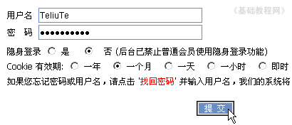
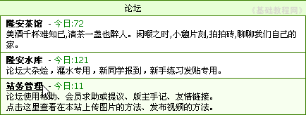
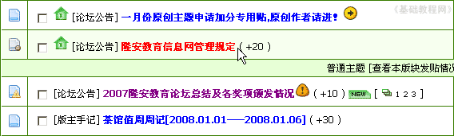
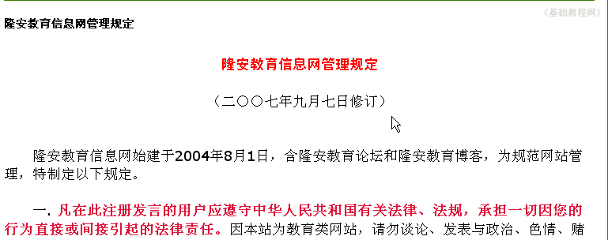
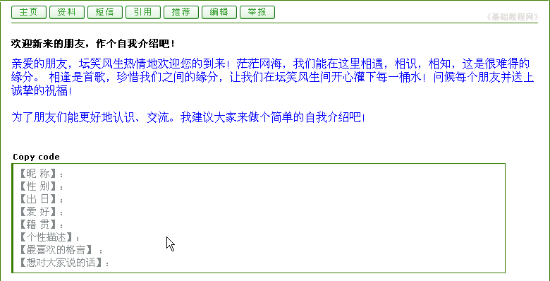

论坛新手操作基础
三、阅读帖子 返回目录
在论坛里可以发表自己的文章，也可以参与讨论别人的文章，这两个称为主题帖和回复帖，下面我们来看一个练习；
1、登录论坛
1）输入网址，例如在地址栏输入http://bbs.laxjyj.com/后回车即可登录论坛首页；

2）此时在左上角显示“您尚未 登录 注册”，点击“注册”链接进入注册页面；

3）在登录页面，输入用户名、密码，选择cookie，然后点击“提交”，过一会儿就登录成功，在页面左边出现自己的用户名；

2、阅读论坛规定
1）进入论坛以后，先大致看一下论坛里的各个版块，可以先看看别人的帖子，
一般先把论坛管理规定看一下，了解论坛中的基本要求，然后看一下各个版规具体的要求，以后发帖的时候心中有数；
2）找到“站务管理”版区，点击进入，这儿一般是发布论坛公告的版区，论坛规定也在这里；

3）进入版区后，可以发现里面有许多行内容，每一行就是一个主题帖，
版区分成上下两部分，上面的是“置顶”帖，下面是普通主题帖，“置顶”帖一般是比较重要的主题；

4）找到论坛管理规定，点击进入，帖子里面是具体的内容，这儿不用着急，耐心看一下各项要求；

５）看完以后继续往下，可以看到其他人的回复，站务管理是比较严肃的版区，各个回帖都比较小心，以免开始就给人留下不好的印象；
3、阅读帖子（看帖）
1）选择一个自己熟悉的版区，或者找一个新手练习的版区，进去先练习一下论坛的操作
2）回到首页，点击“隆安水库”版区，进入相应的版区；
3）进入后，找一个主题，比如报道帖，点击打开，看一下里面的内容；
4）先看看楼主（发主题的会员）的主题是什么，这个帖里头是一个自我介绍的，先看看别人的发帖；

5）看完以后，回复帖子比较多，会有一页一页，点击下面的页数，还可以往后看；
本节学习了在论坛中查看帖子的基本方法，如果你成功地完成了练习，请继续学习下一课内容；
本教程由86团学校TeliuTe制作|著作权所有
基础教程网：http://teliute.org/
美丽的校园……
转载和引用本站内容，请保留版权信息和本站链接。